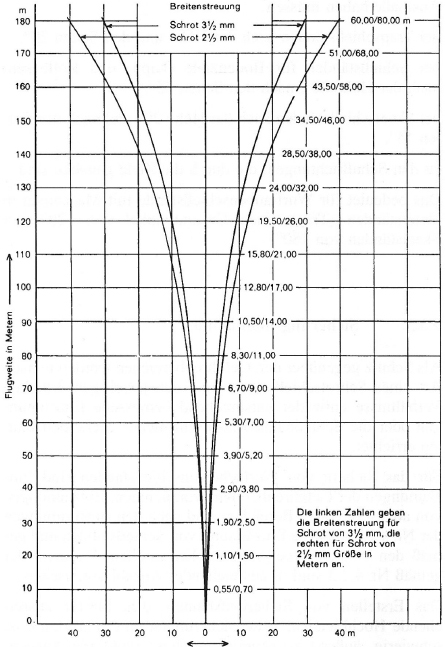
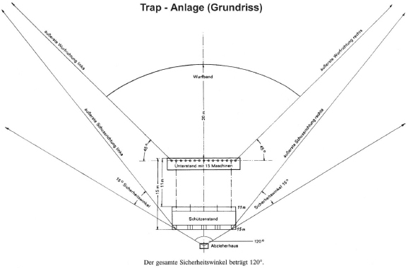
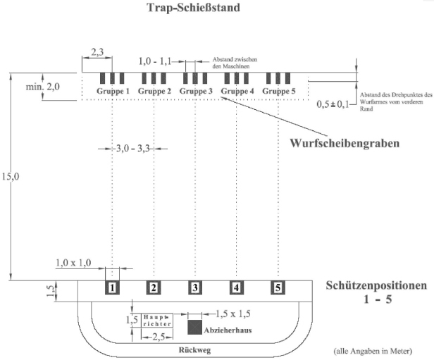
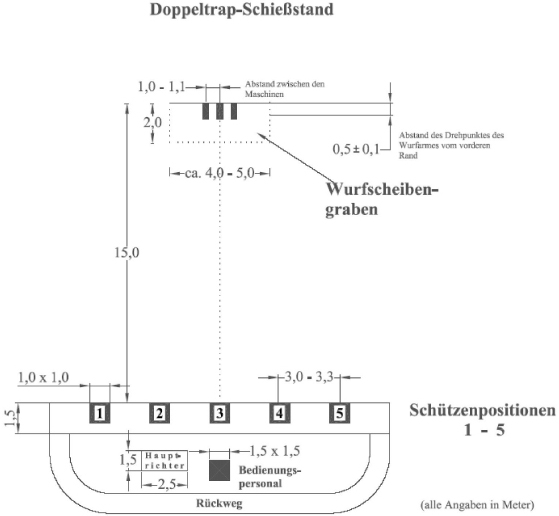
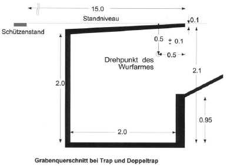
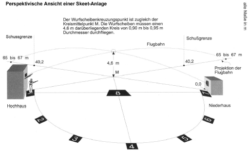
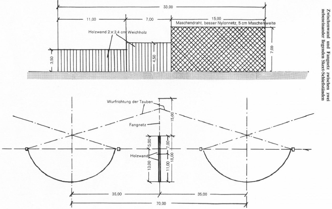
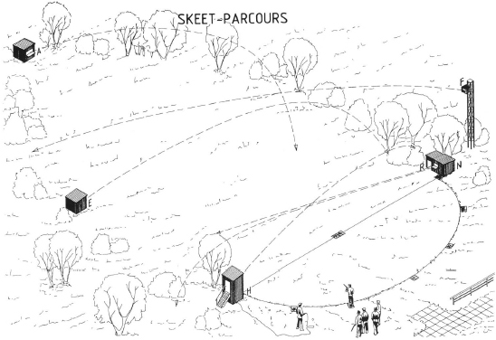

9.1 Allgemeines
9.1.1 Vorbemerkung
Mit dem Schrotschuss aus Flintenläufen werden entweder Bodenziele (Kipp- und Rollhasen) oder fliegende Ziele (Wurfscheiben) auf meist offenen Schießständen beschossen. Gegenüber dem Schuss mit Einzelgeschossen aus Büchsen ergibt sich eine wesentlich kürzere Flugweite und eine geringere Bewegungsenergie sowie daraus resultierend, auch eine geringere Durchschlagskraft der Einzelschrote. Zu beachten ist jedoch die Streuung der sich zunehmend ausbreitenden Schrotgarbe. Das Schießen mit Schrot erfordert andere Sicherungsmaßnahmen, Einrichtungen und Baustoffe, als das Schießen mit Einzelgeschossen.
Da bei den offenen Schrotschießständen nur wenig technische Möglichkeiten zum Lärmschutz bestehen, ist vor der Neuerrichtung solcher Anlagen zu prüfen, ob die Immissionsrichtwerte nach TA Lärm eingehalten werden. Diese Überprüfung hat bereits im Vorplanungsstadium durch eine Schallimmissionsprognose zu erfolgen.
Bei der Erweiterung einer bestehenden Trap- und/oder Skeet-Anlage (z. B. Einbau eines Rollhasen) ist ein SSV zu beteiligen. Sowohl nach den waffenrechtlichen als auch immissionsschutzrechtlichen Bestimmungen ist vor einer derartigen Erweiterung einer bestehenden Schießstätte jeweils eine Genehmigung oder Anzeige erforderlich.
9.1.2 Arten der Schrotschießstände
Schrotschießstände sind zu unterscheiden in Schießstände für Bodenziele und fliegende Ziele.
Zum Üben des Schießens auf sich am Boden bewegendes Wild werden aus beweglichen (abkippbaren) Stahlblechplatten mit den äußeren Umrissen eines Hasen gefertigte Kipphasen oder Rollhasen in der Art von Wurfscheiben über schmale Bahnen quer über die Schießbahnsohle bewegt.
Bei diesen nach Stand der Technik offenen Schießständen wird mit Schrot auf frei fliegende Wurfscheiben geschossen, die von Türmen oder aus Unterständen mittels Wurfmaschinen geworfen werden. Oft werden Trap- und Skeet-Anlagen als eine sogenannte "Kombinierte Anlage" (Kombistand) errichtet, sodass dort wahlweise Trap oder Skeet geschossen werden kann.
Möglich ist auch die Integration einer Kipp- oder Rollhasenanlage in eine bestehende Trap- oder Skeet-Anlage sowie die Ergänzung einer Trap-/Skeet-Anlage durch einen Kompakt-Parcours indem dort zusätzliche Wurfmaschinen installiert werden (Nummer 9.6.3).
Für die Durchführung verschiedener Schießdisziplinen (z. B. praktisches Flintenschießen, Westernschießen) werden unterschiedlich geformte Stahlplatten verwendet (Nummer 6.2).
9.1.3 Baustoffe für Sicherheitsbauten
Für die Errichtung der sicherheitstechnischen Bauten und Einrichtungen sind Baustoffe bestimmter Art, Beschaffenheit und Güte erforderlich und vorzuschreiben. Bei der Auswahl der Baustoffe sind die einschlägigen Normen und Regelwerke in aktueller Fassung zu beachten. Die nachfolgenden Angaben beziehen sich auf die Verwendung von Flinten bis Kaliber 12 und den Einsatz von Bleischrot bis zu einem Durchmesser von ≤ 3,5 mm.
Werden größere Kaliber (z. B. 10) verwendet, müssen die sicherheitstechnischen Einrichtungen dieser Nutzung angepasst werden.
Hochblenden:
2,0 mm Stahlblech nach DIN 1623 T 2 bzw. DIN EN 10130 mit einer Zugfestigkeit ≥ 350 N/mm2, fugenlos verschalt mit Weichholz ≥ 2,4 cm auf ≥ 2,0 cm Abstandslattung befestigt.
Seitensicherungen/Seitenwände:
Wurfmaschinen-Unterstände und Wurfhäuser:
Schießbahnabschluss und Schrotfang mit Fangdach:
(nur für Schießstände für Bodenziele)
Schrotfangvorrichtungen aus Netzen:
Als Schrotfangeinrichtung dienen Netze (z. B. aus Polyester). Die jeweilige Anwendungsmöglichkeit und Eignung ist abhängig von der Mindestschussentfernung, auf der die Netze belastet werden.
Hinweis: Die Eignung von Netzen kann in der Regel nur in Praxisversuchen über eine längere Zeitdauer, unterschiedliche Witterungseinflüsse berücksichtigend, mit einer Belastung von ca. 100 000 Schrotschüssen zuverlässig nachgewiesen werden.
Baustoffe für Nichtbleischrote (z. B. Stahlschrot):
Für Schießstände, bei denen die Verwendung von Stahlschrot oder anderen Alternativschroten zugelassen werden soll, müssen gegebenenfalls andere Baustoffe definiert werden. Diese sind im Einzelfall durch Beschuss auf ihre Eignung zu prüfen und zuzulassen. Insbesondere die größere Rückprallgefahr von Stahlschroten von harten Baustoffen wie Stahlblech oder Beton ist hierbei zu berücksichtigen.
9.2 Flugweite der Schrote, Breitenstreuung und Gefahrenbereiche
9.2.1 Flugweite und Breitenstreuung
Der Gefahrenbereich ergibt sich aus den von der zulässigen Nutzung abhängigen Schussrichtungen und den maximalen Schrotflugweiten (Tabelle 9.2.1) unter Berücksichtigung der Breiten- und Höhenstreuung der frei fliegenden Schrotgarbe (Abbildungen 9.2.1.1 und 9.2.1.2).
Zusätzlich ist die mögliche Ablenkung durch die an Wurfzielen oder von der Schießbahnsohle abprallenden Schroten zu berücksichtigen. Aus diesem Grund sind je nach Nutzungsart angepasste Sicherheitswinkel (Nummer 9.2.3) vorzuschreiben, die diese Umstände mit einschließen.
| Durchmesser Schrotkorn [mm] | Max. Flugweite [m] |
| 2,00 | 200 |
| 2,41 | 220* |
| 2,50 | 230 |
Tabelle 9.2.1 Maximale Schrotflugweiten (Blei)
In Tabelle 9.2.1.1 sind Mittelwerte für den jeweils günstigsten Abgangswinkel von 20° bis 25° und horizontalem Gelände angegeben.
Bezüglich des geforderten Schrotrückhaltes muss bei der Errichtung von Schrotfangeinrichtungen (Erdwall, Netz) zur Bestimmung deren notwendigen Höhe auf außenballistische Rechenprogramme zurückgegriffen werden.
Für die Festlegung der seitlichen Sicherheitswinkel ist die Breitenstreuung der Schrotgarbe zu berücksichtigen. Bei einer frei ausfliegenden Schrotgarbe ist die maximale Ausdehnung zu berücksichtigen. Sind Sicherheitsbauten oder Schrotfangeinrichtungen geplant oder vorhanden, ist auf die dort gegebene Schrotausbreitung abzustellen (Abbildung 9.2.1.2).
Bei der Planung von Schrotfangeinrichtungen muss die Höhenstreuung der Schrotgarbe in Abhängigkeit von der jeweiligen Entfernung berücksichtigt werden. Die Höhenstreuung ist nicht identisch mit der Breitenstreuung.
Bei bestehenden Anlagen mit mittelbarem Gefahrenbereich (Schrotniederschlagsbereich) im Umkreis mit Radius 200 m ist bei der Gefährdungsbeurteilung auch zu berücksichtigen, dass beim Trap-Schießen die günstigsten Abgangswinkel für die maximalen Schrotflugweiten (Tabelle 9.2.1) grundsätzlich nicht erreicht werden, sodass die tatsächliche Flugweite der Schrote weniger als 200 m beträgt.

Abbildung 9.2.1.1 Durchmesser und Breitenstreuung von frei fliegenden Schroten
9.2.2 Gefahrenbereich
Bei Schrotschießständen ist der Gefahrenbereich, aufgrund der Außenballistik der Schrote, in einen unmittelbaren und mittelbaren Gefahrenbereich zu unterteilen.
Im unmittelbaren Gefahrenbereich muss mit einer Verletzung von Personen gerechnet werden. Im mittelbaren Bereich rieseln Schrote ohne Verletzungsgefährdung herunter (Schrotniederschlagsbereich) und können dadurch allenfalls Irritationen von Personen bewirken.
Der in der Umgebung von Schrotschießständen verletzungsrelevante und unbedingt durch entsprechende Sicherungsmaßnahmen zu schützende Bereich (unmittelbarer Gefahrenbereich) ergibt sich zum einen aus dem seitlichen Sicherheitswinkel nach Nummer 9.2.3. Zum anderen ist die Wirksamkeit von auf unbedeckte Haut oder Augen auftreffende Bleischrote bis zu einem Durchmesser von 2,5 mm (Trap und Skeet) für die Begrenzung des unmittelbaren Gefahrenbereiches heranzuziehen.
Als ungefährlich ist Schrot dann anzusehen, wenn es mit hoher Wahrscheinlichkeit keine Schädigung – auch nicht in Form einer oberflächlichen Haut- oder Augenverletzung – hervorrufen kann. Dies bedeutet, dass ein Schrotkorn mit seiner Energiedichte die forensisch anerkannten Grenzwerte für Haut von 0,1 J/mm2 und für Augen von 0,06 J/mm2 deutlich unterschreiten muss (Beat Kneubuehl "Wundballistik und Geschosse"). Hierbei ist auch die geringe ballistische Querschnittsbelastung der Schrote (z. B. 0,015 g/mm2 für 2,0 mm Bleischrot) bei der Gefährdungsbeurteilung zu berücksichtigen. Bei Schroten sind demnach Grenzgeschwindigkeiten von etwa 60 m/s (bei Haut) bzw. 40 m/s (bei Augen) für die Gefährlichkeitsgrenzen zugrunde zu legen.
Daraus folgt, dass sich der unmittelbare Gefährdungsbereich in Schussrichtung bis maximal 150 m erstreckt. Über diese Schussentfernung hinaus ist eine Gefährdung von Personen, auch bei Augentreffern, nicht mehr zu erwarten.
9.2.3 Sicherheitswinkel
Seitlich der äußeren Schussrichtungen ist zur Berücksichtigung der Breitenstreuung und abprallender Schrote ein Sicherheitswinkel von 15° anzusetzen (Abbildung 9.2.1b).
Die maximale Flugweite von Schroten ergibt sich bei einem Abgangswinkel von ca. 20°, wobei mit zunehmender Schussentfernung auch die Höhenstreuung zu berücksichtigen ist. Dieser Sicherheitswinkel von 20° ist dann anzusetzen, wenn z. B. die Absicherung eines Gefahrenbereiches durch abgestimmte Sicherheitsbauten (z. B. Hochblenden bei Kipphasenanlage) erfolgen soll.
Als Maßbezugslinie für den Sicherheitswinkel nach der Höhe dient eine waagerechte Linie in 1,50 m Abstand (mittlere Anschlagshöhe aus dem Bereich 1,30 m bis 1,70 m) über dem Niveau der Schützenstände. Zur Bestimmung der Sicherheitswinkel bei Trapständen sind nach den Seiten hin jeweils die Mitte des äußersten rechten bzw. linken Schützenstandes und die jeweiligen durch die Ziele vorgegebenen äußersten rechten bzw. linken Schussrichtungen maßgebend, also maximal 120° bei seitlicher Wurfrichtung sportlich bis 45°. Bei Trap-Anlagen mit eingeschränkter Wurfbandbreite (Wurfwinkel zur Seite), so wie sie insbesondere bei der Verwendung von Turbulenzautomaten beim jagdlichen Schießen (seitliche Wurfrichtung bis 35°) gegeben ist, sind zu den jeweils äußeren Wurfrichtungen rechts und links die Sicherheitswinkel von 15° hinzuzurechnen.
Unter Berücksichtigung der Schützenpositionen 1 und 7 ergibt sich bei Skeet-Anlagen aus den schießsportlich vorgegebenen Wurfrichtungen zur Seite ein gesamter Sicherheitswinkel von 180°.
In Verbindung mit der maximalen Flugweite der Schrote im Durchmesser 2,0 mm wird der Niederschlagsbereich als Halbkreis mit einem Radius von 200 m definiert, dessen Mittelpunkt in Stand 8 liegt.
Durch Abschirmungen in Form von Seitensicherungen und/oder Schießbahnabschlüssen sowie durchschusssicheren Schrotfangeinrichtungen können die einzuhaltenden Sicherheitswinkel reduziert werden oder auch ganz unberücksichtigt bleiben, wenn durch die Anordnung der Sicherheitsbauten die äußere Sicherheit gewährleistet bleibt. Die für die Abschirmung verwendeten Baustoffe müssen dabei den Bestimmungen der Nummer 9.1.3 entsprechen.
Die Dimensionierung der Höhe von Schrotfangeinrichtungen ergibt sich aus der maximalen Höhe der geworfenen Wurfscheiben und dem korrespondierenden Abgangswinkel der Schrote. Diesem Winkel ist dann die anzusetzende Höhenstreuung der Schrotgarbe, bezogen auf die maximale Schussentfernung bis zu der Schrotfangeinrichtung einschließlich eines Sicherheitszuschlages, hinzuzurechnen. Durch entsprechende Reduzierung der Wurfhöhe der Scheiben kann die notwendige Höhe einer Schrotfangeinrichtung verringert werden.
Grundsätzlich ist davon auszugehen, dass ein Anteil von etwa 5 % der Schrote als Deposition hinter der Schrotfangeinrichtung, u. a. wegen Fehlschüssen und Abprallern von den Scheiben, toleriert werden sollte.

Abbildung 9.2.3 Sicherheitswinkel beim Trap-Schießen
9.2.4 Abpraller
Bleischrote, die in einem Winkel, bezogen auf die Bodenoberfläche, von < 10° auf weichen oder < 45° auf harten (gefrorenen) bzw. steinhaltigen Erdboden auftreffen, können hiervon abprallen. Hierbei ist mit Ablenkungen von der ursprünglichen Flugrichtung zu rechnen.
Dabei werden Stahlschrote und andere Substitute für Bleischrote (sog. Alternativschrote wie z. B. Zinkschrote) erheblich stärker abgelenkt und ergeben gegenüber Bleischroten bis zu doppelt so hohe Ablenkungswinkel.
Zu beachten ist bei einer Verwendung von härteren Alternativschroten, dass diese gefährlich zurückprallen können, wenn sie annähernd senkrecht auf harte Baustoffe treffen. Der Beschuss von Metallzielen (z. B. Kipphase, Anschussscheibe oder Stahlplatten beim praktischen Flintenschießen) z. B. mit Stahlschroten ist deshalb nur unter geeigneten Schutzmaßnahmen (z. B. Schutzbrille) zulässig.
Bei der Überprüfung der Trefferleistung (Streuung, Deckung) von Flinten und Patronen mit Stahlschroten sind vorzugsweise Anschussscheiben aus Papier oder Pappe zu verwenden, um eine Gefährdung durch rückprallende Schrote zu vermeiden.
Ein erhöhtes Risiko von Abprallern besteht für die am Schießen beteiligten Personen auch beim Einsatz von Alternativschroten für das Skeet-Schießen und den Kompakt- bzw. Jagdparcours. Aus Sicherheitsgründen ist das Tragen von geeigneten Schutzbrillen für alle gefährdeten Personen erforderlich und durch deutlich sichtbaren Aushang (Gebotszeichen "Augenschutz benutzen" nach DIN 4844 sowie BGV A 826) vorzuschreiben.
Die Positionen der Seitenrichter müssen bei Verwendung von Weicheisen- oder anderen Alternativschroten auf Skeet-Anlagen so platziert sein, dass diese nicht durch von den Wurfscheiben abprallende Schrote gefährdet werden können.
9.2.5 Sicherungsmaßnahmen
Der Gefahrenbereich ist zu sichern.
Wenn der Gefahrenbereich vom Schützenstand einsehbar und eine Gefährdung für Personen ausgeschlossen ist, kann aus Sicherheitsgründen auf eine Einzäunung verzichtet werden.
Ansonsten kann sich die Einzäunung auf den unmittelbaren Gefahrenbereich beschränken, wenn dieser sich in einem schwach besiedelten Gebiet nach Nummer 4.5.1 befindet.
Sofern der Gefahrenbereich durch Einzäunungen gesichert werden soll, muss der Zaun den Bestimmungen nach Nummer 4.1.1 entsprechen. Je nach Lage und Beschaffenheit des Geländes kann auch eine einfache Zäunung mit Kennzeichnung durch Warnschilder als Absicherung durch Betreten ausreichen. Wege, die im unmittelbaren Gefahrenbereich liegen, müssen während des Schießens abgesperrt sein.
Der Gefahrenbereich nach Nummer 9.2.2 kann je nach Art des Schießstandes und der örtlichen Verhältnisse auch durch abgestimmte Sicherheitsbauten (z. B. Hochblenden, Seitensicherungen und Schießbahnabschluss) abgesichert werden.
Die Abmessungen und Anordnungen der Sicherheitsbauten müssen den Bestimmungen der Nummer 9.1.3 sowie der Festlegung der Gefahrenbereiche gemäß Nummer 9.2.2 unter Berücksichtigung der Sicherheitswinkel gemäß Nummer 9.2.3 entsprechen.
Die Errichtung von Sicherheitsbauten ist bei Wurfscheibenanlagen allerdings kostspielig und beschränkt darüber hinaus u. U. die Ausdehnung des erforderlichen Schuss- und Wurffeldes.
Liegen mehrere Skeet-Anlagen in einer Linie unmittelbar nebeneinander, so sind in jedem Fall zwischen den Anlagen durchschusssichere Seitenwände zu errichten (Abbildung 9.8.2).
9.3 Zugelassene Waffen und Munition
9.3.1 Waffen
Bei Schrotschießständen bezieht sich die Angabe der zugelassenen Waffen auf Flinten. Im Schießsport darf nach den genehmigten Sportordnungen der nach § 15 WaffG anerkannten Schießsportbetreibenden Verbände maximal das Kaliber 12 verwendet werden.
Erlaubt sind auch kombinierte Jagdgewehre (wie z. B. Bockbüchsflinte, Drilling) bei ausschließlicher Benutzung des Flintenlaufes bzw. der Flintenläufe.
Bei Schrotschießständen erfolgt keine Zulassung bezogen auf die E0 wie bei Schießständen für Einzelgeschosse. Die Zulassung bezieht sich auf das Flintenkaliber und die Schrotgröße bzw. -art (Nummer 9.3.2).
9.3.2 Munition
Schießstände für den Schrotschuss sind bei der Verwendung von Bleischrot zugelassen bei
Bei der Verwendung von Weicheisenschroten dürfen für das Trap-Schießen auch Durchmesser bis 2,6 mm und für das Skeet-Schießen bis 2,2 mm zugelassen werden, ohne dass der Gefahrenbereich nach Nummer 9.2.2 und der Sicherheitswinkel nach Nummer 9.2.3 erweitert werden müssen.
Die zugelassenen Schrotdurchmesser und Materialien (Blei-/Weicheisenschrot etc.) sind durch gut sichtbare Hinweistafeln anzuzeigen.
FLG dürfen auf Schrotschießständen nicht zugelassen werden. Diese können nur auf offenen bzw. geschlossenen Schießständen für Einzelgeschosse, z. B. auf 50-m-Schießständen oder 100-m-Schießständen mit entsprechender Zulassung, verwendet werden.
9.4 Ausstattung und Gestaltung von Schrotschießständen
Die nachfolgend aufgeführte Ausstattung und Gestaltung ist, unbeschadet der für die jeweilige Anlagenart zusätzlich erforderlichen Ausrüstung, für alle Schrotschießstände vorzusehen.
9.4.1 Warnflagge
In Anzeigerdeckungen, Maschinenunterständen und/oder Drückerhaus ist jeweils eine rote Warnflagge bereitzuhalten. Diese ist bei Störungen und Arbeiten an den Wurfmaschinen (z. B. Auffüllen der Maschinen) für alle am Schießen beteiligten Personen sichtbar aufzustecken und zeigt an, dass das Schießen unterbrochen ist und die Waffen entladen sein müssen.
Hinweis:
Die früher an einem Fahnenmast aufzuziehende rote Signalflagge, die als Warnhinweis auf den stattfindenden Schießbetrieb vorgeschrieben wurde, ist nicht mehr zulässig.
9.4.2 Schützenstand
Auf dem Schützenstand sind die Schützenpositionen zu kennzeichnen. Hierfür sind quadratische Platten mit der Kantenlänge von 90 cm (Skeet) bzw. 100 cm (Trap) zu verwenden. Diese müssen einen sicheren Stand der Schützen gewährleisten und bündig in den Boden eingelassen sein, um ein Stolpern der Schützen an hervorstehenden Kanten auszuschließen.
Die Anordnung der Schützenpositionen ergibt sich aus den Regeln für das jagdliche und sportliche Schießen. Auf Trap-Ständen mit Turbulenzautomaten sind die Bodenplatten in einem Radius anzuordnen.
Jede Standfläche sollte über einen Gummiblock o. Ä. verfügen, auf dem der Schütze seine Flinte mit den Läufen absetzen kann.
Mikrofone zum Abrufen der Wurfscheiben sind so zu positionieren, dass die Schützen bei der Waffenhandhabung nicht behindert werden. Mikrofonkabel müssen stolperfrei verlegt werden.
9.4.3 Abtrennung des Warte- und Zuschauerbereichs
Zur Abgrenzung des Schützenstandes vom Zuschauer- und Wartebereich ist in einem Abstand von ≥ 2,00 m hinter den Schützenpositionen eine Abtrennung zu errichten.
Diese muss grundsätzlich als feste bauliche Einrichtung (Holzzaun, Geländer o. Ä.) errichtet werden. Bei nur an wenigen Schießtagen im Jahr genutzten Schießständen kann eine solche Absperrung aus einem rot/weißen Band o. Ä. bestehen.
9.4.4 Gewehrständer und Patronenablagen
Für das Abstellen der Waffen und das Ablegen von Patronen ist eine genügende Anzahl von Gewehrständern und Patronenablagen vorzusehen.
9.4.5 Auffangbehälter
Zum Aufsammeln der abgeschossenen Hülsen sind bei den Schützenpositionen entsprechende Behälter bereitzustellen.
9.5 Schießstände für Bodenziele
9.5.1 Kipphase
Das Schießen auf den Kipphasen wird überwiegend beim jagdlichen Schießen sowie als Bestandteil der praktischen Jägerprüfung durchgeführt. Die Ziele werden manuell oder elektrisch bewegt.
Die Ziele sind aus Stahlblech gefertigt und verfügen über ein oder mehrere klappbare Segmente, die als Trefferanzeige dienen. Bei einem ausreichenden Impuls der auftreffenden Schrote werden die Ziele zum Kippen gebracht (daher: "Kipphase").
9.5.1.1 Abmessungen der Schießbahn
Die Länge der Schießbahn soll zwischen 25 m und 35 m betragen und je nach Schussentfernung über eine Schneisenbreite für den Kipphasen zwischen 6,00 m und 8,00 m verfügen.
Die Schießbahnsohle muss aus Erde oder Sand (Körnung ≤ 3 mm) bestehen, frei von Steinen oder Fremdkörpern sein und annähernd horizontal verlaufen.
9.5.1.2 Sicherheitsbauten
Neben natürlichen Geländeformen eignen sich als Seitensicherung und Schießbahnabschluss Erdwälle oder Mauern. Gebaute Schießbahnabschlüsse und Höhen- sowie Seitensicherungen aus Mauerwerk o. Ä. müssen den Bestimmungen der Nummer 9.1.3 entsprechen.
Um den Gefahrenbereich und damit den Platzbedarf einer Kipphasenanlage so gering wie möglich zu halten, sind entsprechende Seiten- und Höhensicherungen vorzusehen. Der Gefahrenbereich und die Sicherheitswinkel werden dadurch weitestgehend abgeschirmt. Dies ist dann nicht erforderlich, wenn die Kipphasenanlage in einer Wurfscheibenschießanlage integriert ist und der Gefahrenbereich dadurch nicht verändert wird.
Ein Schrotfang ist in jedem Fall über die gesamte Schneisenbreite erforderlich. Ein Fangdach ist zur Vermeidung schädlicher Bodenveränderungen vorzuschreiben und bei Altanlagen nachzurüsten. Das Erfordernis eines Fangdaches ergibt sich auch bei einer Verwendung von Weicheisen- oder anderen Alternativschroten.
Eine Kipphasenanlage kann in eine offene Schießbahn zum Schießen mit Einzelgeschossen eingebaut werden. Sofern der Kipphase von den vorhandenen Schützenpositionen beschossen wird und die Kipphasenanlage auf Zwischenentfernung positioniert ist, müssen als bauliche Maßnahmen ein Schrotfang und ein Fangdach gewährleistet sein.
Die Abschirmung der Laufschiene des Kipphasen muss auf die zugelassenen Waffen- und Munitionsarten abgestimmt sein.
Wird die Schützenposition in die Schießbahn verlegt und der Kipphase vor dem Hauptgeschossfang bewegt, so ist für diese Schützenstandorte auf Zwischenentfernung eine entsprechende Höhensicherung durch Hochblenden vorzusehen. Die Standfläche der Schützenposition ist standsicher und aus durchdringbarem Material auszuführen.
9.5.1.3 Zieldarstellung und Unterstand
Die Laufschiene des Kipphasen ist durch eine vor der Schneise zu errichtende Bodentraverse oder Blende vor direktem Beschuss zu schützen. Elektrische Anlagenteile im Maschinenunterstand sind beschusssicher gemäß den Bestimmungen der Nummer 9.1.3 abzuschirmen.
Manuelle Kipphasenanlagen sind nur noch bei bestehenden Anlagen zulässig. Es muss ein durchschusssicherer Unterstand für das Bedienungspersonal nach den Bestimmungen der Nummer 9.1.3 vorhanden sein. Eine für den Durchlass des Kipphasen erforderliche Öffnung im Unterstand ist so schmal zu halten, dass sie nur den Scheibendurchlass gestattet. Zum Schutz vor Abprallern ist dieser schützenseitig mit einer Stahlblechblende der Dicke ≥ 2 mm zu versehen.
Es sollte darauf hingewirkt werden, dass solche Vorrichtungen durch elektrische nur von den Schützenständen aus zu bedienende Anlagen ersetzt werden.
9.5.1.4 Verwendung von Weicheisenschrot
Der Beschuss von Kipphasen mit Weicheisen- oder anderen, härteren Alternativschroten ist wegen der damit verbundenen Gefahr von Rückprallern nur mit PSA (z. B. Schutzbrillen) zulässig.
Wird der Einsatz von Weicheisen- oder anderen Alternativschroten vorgeschrieben, so können für die Segmente des Kipphasen geeignete Kunststoffe (sog. Elastomere) verwendet werden. Bei der Materialauswahl ist ein SSV zu beteiligen und gegebenenfalls ein Beschussversuch durchzuführen.
9.5.2 Rollhase
Schießstände für Rollhasen finden Verwendung als Bestandteil von Wurfscheiben- oder Parcoursanlagen.
Die Ziele, auch Rabitts genannt, bestehen aus Rollscheiben (ähnlich den Wurfscheiben) und werden mithilfe einer speziellen Vorrichtung quer oder schräg über den Boden der Schießbahn gerollt. Sie zersplittern bei einem Treffer.
Die "Rollbahnen" können befestigt oder mit Gummimatten belegt werden.
9.5.2.1 Schießbahn
Hinsichtlich der Beschaffenheit der Schießbahn sind die Bestimmungen der Nummer 9.5.1.1 anzuwenden. Vorteilhaft für ein störungsfreies Rollen der Scheibe ist eine Befestigung der Rollbahn z. B. durch eine Betonsohle oder mit Gummimatten. Längenvorgaben für die Rollbahn existieren nicht.
Die Ränder und Kanten einer betonierten Rollbahn sind gegen direkten Beschuss mit Erde bzw. Sand anzuschütten oder durch Holzbohlen der Dicke ≥ 50 mm vor direktem Beschuss zu schützen.
9.5.2.2 Sicherheitsbauten
Hinsichtlich der Sicherheitsbauten sind Nummer 9.5.1.2 und 9.5.1.3 anzuwenden.
Das Betreiben einer Rollhasenanlage in Schießbahnen für Einzelgeschosse ist nicht zulässig.
9.6 Schießstände für Wurfscheiben (Flugziele)
9.6.1 Trap
Ein Trap-Schießstand besteht aus dem Schützenstand, einem Unterstand bzw. Wurfmaschinengraben mit bis zu 15 Wurfmaschinen (olympischer Graben) sowie dem Wurffeld (Schießbahn).
Beim Trap-Schießen werden Wurfscheiben nach den Regeln des sportlichen und jagdlichen Schießens in unterschiedliche Höhen geradeaus oder seitlich zur mittleren Schussrichtung geworfen.
9.6.1.1 Anordnung und Beschaffenheit des Schützenstandes
Bei Trap-Anlagen sind 5 Schützenpositionen (Abbildung 9.6.1.1) vorzusehen. Diese liegen beim sportlichen Trap-Schießen 15,00 m hinter der Vorderkante des Maschinenunterstandes (Abbildung 9.6.1.2) auf einer dazu parallelen Linie. Jede der fünf Schützenpositionen ist dabei genau hinter der mittleren der ihr zugeordneten Gruppe von drei Wurfmaschinen einzurichten. Eine Warteposition ist etwa 2,00 m hinter Schützenposition 1 anzuordnen.
Die Sohle bzw. Standfläche der Schützenpositionen hat auf gleicher Höhe der Oberkante des Maschinenunterstandes zu liegen (Abbildung 9.6.1.2).
Wird eine Trap-Anlage auch für das jagdliche Schießen genutzt, sind zusätzlich fünf Schützenpositionen analog im Abstand von 11,00 m und eine Warteposition einzurichten.
Ausschließlich jagdlich genutzte Trap-Anlagen verfügen oft nur über drei oder fünf Wurfmaschinen. Die mittlere Schützenposition ist dabei genau hinter der mittleren Wurfmaschine anzuordnen. Der Abstand der Schützenpositionen von Mitte zu Mitte hat 3,00 m bis 3,30 m zu betragen.
Bei einem Trap-Stand mit Turbulenzautomat sind die Standflächen der Schützen auf einem Kreisbogen mit Radius 15,00 m (sportlich) bzw. 11,00 m (jagdlich) von der Mitte der Vorderkante des Maschinenunterstandes anzuordnen. Auch hier beträgt der Abstand der Schützenpositionen von Mitte zu Mitte ≥ 3,00 m.

Abbildung 9.6.1.1.a Anordnung der Schützenstände beim sportlichen Trap-Schießen

Abbildung 9.6.1.1.b Anordnung der Schützenstände beim sportlichen Doppeltrap-Schießen
9.6.1.2 Ausführung und Abmessungen des Maschinenunterstandes
Der Wurfmaschinenunterstand wird massiv und wasserdicht sowie in grundwassernahen Lagen wasserundurchlässig und auftriebsicher (WU-Beton) ausgeführt. Zweckmäßig ist der Einbau eines Pumpensumpfes, um eventuell eingedrungenes Wasser abführen zu können.
Für die Lagerung des Scheibenvorrates sind erhöhte Ablagen vorzusehen, um ein trockenes Lagern der Wurfscheiben zu gewährleisten.

Abbildung 9.6.1.2 Maschinenunterstand (Graben) für Trap-Stände
Die Wurfmaschinen sind so zu montieren, dass ein bequemes und sicheres Befüllen der Magazine gewährleistet ist. Zu geringe Abstände gefährden das Bedienungspersonal beim Auffüllen der Maschinen, wenn während des Füllvorgangs eine benachbarte Wurfmaschine ausgelöst wird.
Die lichte Höhe des Wurfmaschinenunterstandes hat an der Rückseite ≥ 2,00 m und an der Vorderseite ≥ 2,10 m zu betragen. Die Länge ergibt sich aus der Anzahl der aufzustellenden Wurfmaschinen. Die Höhe der Konsole für die Installation der Wurfmaschinen sowie die Wurföffnung sind auf den jeweiligen Wurfmaschinentyp bzw. nach den Vorgaben der Hersteller abzustimmen. Den erforderlichen Querschnitt eines Maschinenunterstandes für Trap und Doppeltrap zeigt Abbildung 9.6.1.2. Bei bestehenden Anlagen sind Abweichungen von den Abmessungen des Grabens möglich.
Die Bedachung des Maschinenunterstandes muss durchschusshemmend gemäß Nummer 9.1.3 ausgeführt sein. Die plane Fläche der Überdachung bedarf keiner zusätzlichen Abdeckung mit Erde oder Sand. Aus dem Erdboden ragende Kanten und Ränder der Überdachung sind so abzudecken, dass auftreffende Schrote nicht zurückprallen können.
9.6.1.3 Wurfmaschinen
Bei den Wurfmaschinen sind Maschinen mit fest einstellbaren Wurfrichtungen und Turbulenzautomaten mit selbsttätig wechselnden Wurfrichtungen üblich.
Manuell zu bedienende Wurfvorrichtungen werden heute kaum noch genutzt. Sie werden aber in den offiziellen Regeln der ISSF beschrieben.
9.6.1.4 Einstellungen der Wurfmaschinen
Schießstände für Trap und Doppeltrap sind hinsichtlich der inneren Geometrie, das heißt bezüglich der Anordnung von Wurffeld, Wurfmaschinen, Bedachung und Schützenstände, so einzurichten, dass folgende Flugweiten, Flughöhen und Flugrichtungen der Wurfscheiben erreicht werden können:
Bei der Dimensionierung von Schrotfangeinrichtungen sind die Flugbahnen der Wurfscheiben zugrunde zu legen.
Hinweis:
Sind die vorgeschriebenen Wurfweiten aufgrund von örtlichen Gegebenheiten, wie z. B. installierten Schrotfangsystemen in Form von Wällen oder Netzen, nicht realisierbar, so sind die Wurfmaschinen vor dem Schießen seitlich auszuschwenken und in eine Richtung einzustellen, die diese Flugweiten auf eine niveauangepasste Referenzfläche ermöglicht.
Mit dieser Einstellung sind dann die Wurfmaschinen in die vorgeschriebenen Wurfrichtungen zurückzuschwenken und festzustellen.
Durch die Errichtung von Schrotfangsystemen in geringeren Distanzen im Wurffeld kann wesentlich an Höhe (bei Wallanlagen damit auch an Volumen) eingespart werden. Bei im Breitensport bzw. jagdlichen Schießen auf Bezirksebene genutzten Schrotschießständen ist somit eine Reduzierung der maximalen Wurfweite der Wurfscheiben sinnvoll. Bezogen auf die Schützenstände sollte aber mindestens bis zur Schussentfernung von 66 m bzw. 70 m (55 m Entfernung zur Wurföffnung) ein freier Flug der Wurfscheiben gewährleistet sein.
Bei der Errichtung von Schrotfangsystemen bei für nationale und internationale Wettkämpfe genutzten Anlagen ist hingegen sicherzustellen, dass die Wurfscheiben ungehindert frei ausfliegen können.
9.6.2 Skeet
Skeet-Schießstände verfügen über zwei Wurfhäuser (Hoch- und Niederhaus), in denen jeweils eine Wurfmaschine untergebracht ist. Die Wurfmaschinen werfen die Scheiben in gleichbleibender Richtung, Höhe und Winkel (Nummer 9.6.2.4). Eine Skeet-Anlage verfügt über maximal 8 Schützenpositionen.
Nach den jeweils in den Verbänden üblichen Regeln beschießen die Schützen nacheinander von Stand zu Stand einzelne Wurfscheiben oder sogenannte Dubletten.
9.6.2.1 Schützenstand
Auf dem Bogen eines Kreissegmentes mit Radius 19,20 m befinden sich 7 Schützenpositionen; die 8. Position liegt mittig auf der Verbindungslinie zwischen Hoch- und Niederhaus (Abbildung 9.6.2.1).

Abbildung 9.6.2.1 Wurfrichtungen und Flugweiten der Wurfscheiben beim Skeet-Schießen
9.6.2.2 Ausführung der Wurfhäuser
Für Wurfhäuser gelten die Bestimmungen für Baustoffe nach Nummer 9.1.3. Die den Schützen zugewandten Seitenwände müssen durchschuss- und rückprallsicher ausgeführt sein.
Der Zugang für das Bedienpersonal muss sich an der der Wurföffnung gegenüber liegenden Seite des Wurfhauses befinden.
Die Wurfmaschinen sind innerhalb der Wurfhäuser so aufzustellen, dass die Abwurfhöhe im Hochhaus 3,05 m und im Niederhaus 1,05 m über der Sohle des Schützenstandes liegt. Die Größe der Wurföffnungen sind auf das Maß der Drehbewegung des Maschinenwurfarmes zu begrenzen.
Um die Schützen vor Wurfscheibensplittern bei Bruch zu schützen, sind an den Wurföffnungen Blenden anzubringen.
9.6.2.3 Einstellungen der Wurfmaschinen
Beim Skeet-Schießen werden Wurfscheiben nach den Regeln des sportlichen und jagdlichen Schießens in gleichbleibenden Wurfweiten, -richtungen und -höhen geworfen.
Die Wurfmaschinen sind derart einzustellen, dass sich die Flugbahnen der Scheiben von Hoch- und Niederhaus im Mittelpunkt des Kreises, auf dessen Bogen die Schützenpositionen liegen, in einer Höhe von 4,60 m kreuzen (Abbildung 9.6.2.1).
Die Wurfweiten betragen schießsportlich 65 m bis 67 m, jagdlich 60 m bis 65 m.
Liegen Skeet-Anlagen nebeneinander und können Wurfscheiben in das Wurffeld der benachbarten Anlage fliegen, sind geeignete Maßnahmen (z. B. Netze) zum Auffangen der Wurfscheiben zu errichten (Abbildung 9.6.2.3).

Abbildung 9.6.2.3 Trennwand zwischen zwei nebeneinander liegenden Skeet-Ständen
Hinweis:
Sind diese Wurfweiten aufgrund der örtlichen Gegebenheiten (z. B. zwei dicht nebeneinander liegende Skeet-Anlagen) oder aufgrund von installierten Schrotfangsystemen nicht realisierbar, so sind die Wurfmaschinen vor dem Schießen seitlich auszuschwenken und in einer Richtung einzustellen, die diese Flugweiten auf eine niveauangepasste Referenzfläche, das heißt Höhe der Fläche im Niveau der Schützenstände sowie Entfernung wie die vorgeschriebene jeweilige Wurfweite ermöglicht. Die Abwurfhäuser müssen in diesem Fall entsprechende Wurföffnungen besitzen. Mit dieser Einstellung sind die Wurfmaschinen dann in die vorgeschriebenen Wurfrichtungen zurückzuschwenken und festzustellen.
Bei der Errichtung von Schrotfangsystemen ist sicherzustellen, dass die Wurfscheiben mindestens 3,00 m bis 5,00 m über die Schussgrenze von 40,30 m ± 0,10 m Entfernung von der Wurföffnung hinaus, also bis mindestens 43,00 m, ungehindert fliegen können. Bei zu geringer Flugweite wird die Trefferauswertung erschwert.
9.6.3 Kompakt-Parcours
9.6.3.1 Allgemeines
Als Kompakt-Parcours (auch "Compak-Sporting") werden Schrotschießstände bezeichnet, die aus einer Trap- oder Skeet-Anlage bzw. einer kombinierten Trap-/Skeet-Anlage bestehen und durch Aufstellen zusätzlicher Maschinen für Flug- und/oder Bodenziele individuell erweitert werden kann.
Hinweis:
Bei der Erweiterung einer bestehenden Trap- und/oder Skeet-Anlage zu einem Kompakt-Parcours ist ein SSV zu beteiligen. Sowohl nach den waffenrechtlichen als auch immissionsschutzrechtlichen Bestimmungen ist vor einer derartigen Erweiterung einer bestehenden Schießstätte jeweils eine Genehmigung oder Anzeige erforderlich.
9.6.3.2 Gefahrenbereich
Ein wesentlicher Vorteil des Kompakt-Parcours besteht darin, dass bei entsprechender Anordnung der zusätzlichen Maschinen sowie den Ausrichtungen der Flug- bzw. Rollbahnen der Gefahrenbereich der vorhandenen Trap- oder Skeet-Anlage nicht erweitert bzw. ausgedehnt werden muss.
Wird durch die zusätzlichen Wurfrichtungen der vorhandene Gefahrenbereich nicht eingehalten, so ist er entsprechend den Bestimmungen nach Nummer 9.2.1 und 9.2.2 zu erweitern.
9.6.3.3 Schützenpositionen
Für das Schießen auf einem Kompakt-Parcours können die Schützenpositionen der vorhandenen Trap- und/oder Skeet-Anlage genutzt werden. Werden zusätzliche Standflächen errichtet, so müssen diese den Bestimmungen nach Nummer 9.4.2 entsprechen. Die Abstände dürfen 3,00 m nicht unterschreiten.
Werden Wurfscheiben auch von hinten über die Schützen hinweg geworfen, so muss durch geeignete Sicherungsmaßnahmen gewährleistet werden, dass sie erst nach Überfliegen der jeweiligen Schützenposition beschossen werden können. Durch Vorrichtungen (z. B. Käfige) ist zu verhindern, dass nach hinten geschossen werden kann.
Sofern die Ziele für den Kompakt-Parcours aufgrund ihrer Wurfrichtungen nur nach vorne bzw. vorne/seitlich beschossen werden können, sind keine zusätzlichen Sicherungsmaßnahmen erforderlich.

Abbildung 9.6.3.3 Beispiel eines Skeet-Parcours
9.6.4 Jagdparcours
9.6.4.1 Allgemeines
Auf einem Jagdparcours wird auf Flugziele in Form verschiedener Arten von Wurfscheiben sowie auf Bodenziele (Rollhase) geschossen. Dazu wird in einem beliebigen Gelände eine größere Anzahl von unterschiedlichen Wurfmaschinen aufgestellt, sodass diese von den Schützenpositionen meist nicht einsehbar sind. Die Wurfmaschinen können in ebenerdigen Unterständen oder in hohen Türmen untergebracht sein.
9.6.4.2 Gefahrenbereich
Der durch die verschossenen Schrote gefährdete Bereich ist nach den Bestimmungen der Nummern 9.2.1 bis 9.2.3 für jede Station des Parcours gesondert festzulegen.
Sind Maschinenunterstände im Wurffeld direkt beschießbar, sind diese nach den Bestimmungen der Nummer 9.1.3 abzuschirmen.
9.6.4.3 Schützenstand
Bei der Anordnung der Schützenstände und -positionen ist darauf zu achten, dass einzelne Positionen bei gleichzeitiger Nutzung nicht innerhalb der unmittelbaren Gefahrenbereiche anderer Parcoursstationen liegen.
Die Standflächen müssen hinsichtlich ihrer Beschaffenheit den Bestimmungen nach Nummer 9.4.2 entsprechen.
Um eine Gefährdung auszuschließen, dürfen nicht mehrere Schützen einer Gruppe gleichzeitig schießen. Der Schwenkbereich der Waffen darf 45° nach jeder Seite nicht überschreiten. Bei Zielen, die zum Beschießen einen größeren Schwenkbereich erfordern, sind die Bereiche durch bauliche Maßnahmen zu begrenzen.
9.6.4.4 Schussrichtungen
Für jeden Schützenstand und jede -position ist der zu beschießende Bereich individuell festzulegen.
Die Aufsichtsperson ist für die Einhaltung der Schussbereiche verantwortlich. Liegt das Parcoursgelände in einem größeren und unübersichtlichen Gelände, sodass die einzelnen verantwortlichen Aufsichten keine Sicht- und Rufverbindung untereinander haben, so ist durch geeignete Maßnahmen (z. B. Funkverbindungen) dafür Sorge zu tragen, dass keine gegenseitige Gefährdung eintritt.
9.6.4.5 Wege und Wartebereiche
Die Wege müssen sicher zu begehen sein und sind zu kennzeichnen. Sie müssen gegenüber den unmittelbaren Gefahrenbereichen anderer Stationen bei gleichzeitiger Nutzung durch geeignete Maßnahmen abgetrennt werden.
An jeder Station muss für die wartenden Schützen einer Gruppe ein gekennzeichneter Wartebereich vorhanden und so angeordnet sein, dass auch bei den äußersten für diesen Stand festgelegten Schussrichtungen eine Gefährdung der wartenden Schützen ausgeschlossen ist. Liegen mehrere Schützenpositionen nahe beieinander, genügt für diese ein gemeinsamer Wartebereich, wenn dies die Schussrichtungen zulassen.
9.7 Schrotrückhalte- bzw. Schrotfangsysteme
9.7.1 Allgemeines
Sofern auf einem Schrotschießstand bauliche Vorkehrungen getroffen werden, um den Eintrag von Schroten in die Fläche zu minimieren oder zu unterbinden, ist die Planung solcher Maßnahmen unter Berücksichtigung der ballistischen und sonstigen Vorgaben nach den Nummern 9.2.1, 9.2.2, 9.6.1.4 und 9.6.2.4 durchzuführen.
Für den planerischen Ansatz wird man dabei immer von Normalbedingungen ausgehen müssen, das heißt die äußeren Einflüsse auf das Flugverhalten der Wurfscheibe bzw. Schrotgarbe (Windrichtung, Waffentyp, Munitionssorte etc.) müssen zunächst vernachlässigt werden.
Im konkreten Einzelfall sind alle Pläne, Berechnungen und Herleitungen durch einen SSV, der in der planerischen Umsetzung von Schrotrückhaltesystemen von Wurfscheibenanlagen Erfahrung besitzt, zu prüfen und gegebenenfalls anzupassen.
9.7.2 Schrotfangsysteme für Trap-Anlagen
9.7.2.1 Rahmenbedingungen
Mit den für das Trap-Schießen vorgegebenen Einstellungen der Wurfweiten und -höhen (Nummer 9.6.1.4) sind die jeweils möglichen anlagenbezogenen Anschlagswinkel (= Abgangswinkel der Schrotgarbe) zu bestimmen. Der Bezugspunkt dieser Berechnung ist der Tangentenpunkt der Flugbahn für die höchste Wurfscheibe.
Die Mehrzahl der Schützen versucht, die Wurfscheiben im aufsteigenden Bereich ihrer Flugbahnen zu beschießen. Die zu erwartenden maximalen Schrotabgangswinkel (= Anschlagswinkel der Waffe) ergeben sich bei der höchsten Scheibe bis zu deren Gipfelpunkt in einer Schussentfernung von ca. 40 m bis 50 m. Wird die Wurfscheibe auf weitere Entfernungen beschossen, verringert sich der Anschlagswinkel, da sich die Scheibe dann im fallenden Bereich ihrer Flugbahn befindet.
Bei der Konstruktion von Schrotfangeinrichtungen muss weiterhin die außenballistische Charakteristik der sich ausbreitenden Schrotgarbe beachtet werden (Nummer 9.2.1).
9.7.2.2 Folgerungen für die Planung
Für die Planung und die Errichtung von Schrotfangeinrichtungen muss von den maximal möglichen Schrotabgangswinkeln ausgegangen werden, die sich beim Schuss auf die im höchsten Punkt der Flugbahn befindliche Wurfscheibe ergeben. Zusätzlich muss die Höhenstreuung der Schrotgarbe berücksichtigt werden, da sonst die absolute Wirksamkeit der Schrotfangeinrichtung fehlerhaft berechnet wird.
Auf der Grundlage der obigen Rahmenbedingungen ergibt sich, dass bei der Dimensionierung von Schrotfangeinrichtungen für jagdlich und/oder sportlich genutzte Trap-Anlagen keine grundlegenden Unterschiede zu berücksichtigen sind. Lediglich die geringeren Wurfweiten der Scheiben im jagdlichen Schießen erlauben es, die Schrotfangeinrichtung näher an den Schützenstand heranzubauen und so die erforderliche Gesamthöhe zu reduzieren. Dabei können im Einzelfall auch andere Nutzungscharakteristika (z. B. niedrigere Wurfhöhen der Scheiben) die Höhe der Geschossfangeinrichtung bestimmen. Der gesamte Planungsansatz ist vollständig und nachvollziehbar darzulegen.
Die Gesamthöhe einer Schrotfangeinrichtung ist abhängig von der Entfernung des Schützenstandes bis zur Oberkante der Schrotfangeinrichtung. Senkrecht zur Flugbahn der Schrote angeordnete Abschirmungen (Netze, Wände etc.) sind zwar technisch aufwendig, lassen aber geringere Gesamthöhen zu, da sie näher an den Schützenstand herangebaut werden können. Erdbauwerke bzw. Kombinationen von Erdbauwerken und Schrotfangwänden oder -netzen müssen in der Regel höher bemessen werden, da deren Oberkante durch die erforderliche Neigung der Erdbauwerke nicht so nahe an die Schützenstände gebaut werden kann.
9.7.2.3 Auswirkungen auf Gefahrenbereiche
Der unmittelbare Gefahrenbereich kann verkleinert werden, wenn er durch Sicherheitsbauten abgeschirmt ist.
Schrotfangeinrichtungen für Trap-Anlagen können eine vollständige Abschirmung der Gefahrenbereiche nur unzureichend gewährleisten. Demzufolge muss bei Trap-Anlagen hinter der Schrotfangeinrichtung ein mittelbarer Gefahrenbereich ausgewiesen und zumindest durch eine Beschilderung gekennzeichnet werden. Ob eine Zäunung erforderlich und wo diese gegebenenfalls anzubringen ist, richtet sich nach den Umständen des Einzelfalls. Erdwälle müssen auf der rückwärtigen Seite durch einen Zaun gesichert werden, um ein Besteigen zu verhindern.
9.7.3 Schrotfangeinrichtungen für Skeet-Anlagen
9.7.3.1 Rahmenbedingungen
Beim Skeet-Schießen ergibt sich aus dem Zusammenhang zwischen Wurfhöhe und -richtung der Scheiben sowie der Lage der Schützenpositionen unter Berücksichtigung einer Anschlagshöhe (= Schrotabgangshöhe) von 1,50 m ein Schrotabgangswinkel von etwa 9°, bezogen auf den Kreuzungspunkt der Wurfscheiben in einer Höhe von 4,60 m und einer Entfernung von den Schützenständen von 19,20 m.
Beachtet werden muss zusätzlich, dass in der Praxis regelmäßig höhere Anschlagswinkel erforderlich sind, um die Scheiben zu treffen. Bei der Berechnung der Schrotfangeinrichtung müssen deshalb die maximal möglichen Schrotabgangswinkel (ohne Stand 8) berücksichtigt werden. Eine Abschirmung für den Stand 8 ("Überkopf-Taube") ist aufgrund des hohen Anschlages mit baulichen Mitteln nicht möglich.
Die maximalen seitlichen Schrotabgangswinkel ergeben sich beim jagdlichen Schießen von der Schützenposition 1 auf die Niederhaus-Wurfscheibe und bei der Dublette von der Schützenposition 7 auf die Hochhaus-Wurfscheibe, wenn die Scheiben bis zu einer möglichen Flugweite (Schussgrenze) von 40,30 m beschossen werden sollen.
Beim sportlichen Skeet-Schießen ergeben sich die maximalen Abgangswinkel jeweils für die zweite Wurfscheibe bei den Dubletten auf den Schützenpositionen 1 und 7. Eine optimale Schrotfangeinrichtung für einen Skeet-Stand muss derart bemessen sein, dass auch für diese maximalen Schussrichtungen die erforderliche Abschirmung gewährleistet ist.
9.7.3.2 Folgerungen für die Planung
Im Hinblick auf die obigen Rahmenbedingungen sind bei der Dimensionierung von Schrotfangeinrichtungen für jagdlich und/oder sportlich genutzte Skeet-Anlagen kaum Unterschiede zu berücksichtigen.
Eine optimal dimensionierte Schrotfangeinrichtung für einen Skeet-Stand wird aufgrund der möglichen Schussrichtungen und Schrotabgangswinkel unterschiedliche Gesamthöhen haben. So wird die Abschirmung nach den Seiten hin höher sein müssen als mittig nach vorne. Es ergibt sich deshalb eine Grundform, die insbesondere durch Schrotfangwände oder Netzbauwerke umgesetzt werden kann.
Die zulässigen Wurfscheiben-Flugweiten und -richtungen erlauben es, die Schrotfangeinrichtung sehr nahe an die Schützen heranzubauen und so die erforderlichen Höhen zu minimieren. Diese ergeben sich durch die verschiedenen Abstände der Oberkante der Abschirmung von den Schützenständen unter Berücksichtigung der unter Nummer 9.7.3.1 genannten Höhen, Entfernungen und Abgangswinkel.
Die Abstände müssen so gewählt werden, dass die Wurfscheiben innerhalb des für einen regulären Treffer erforderlichen Bereichs frei fliegen können (Nummer 9.6.2.4). Auch hier können senkrecht angeordnete Schrotfangwände niedriger bemessen werden als Erdbauwerke. Wie bei Trap-Anlagen ist die – hier jedoch größere – Streuung der Schrotgarbe zu berücksichtigen.
Diese kompakte Bauweise von Schrotfangeinrichtungen setzt voraus, dass Baustoffe verwendet werden, die nicht zu gefährlichen Abprallern führen.
Auch für Skeet-Anlagen kann die Höhe der Schrotfangeinrichtungen durch z. B. niedrigere Wurfhöhen beeinflusst werden. Der gesamte Planungsansatz ist vollständig und nachvollziehbar darzulegen.
9.8 Spezifische Begriffe beim Schrotschuss
| Anschlagshöhe | Die Anschlagshöhe wird durch den Abstand Standfläche des Schützen bis zur Waffe bestimmt. Beim Schrotschießen wird für den dort üblichen stehenden Anschlag eine mittlere Anschlagshöhe von 1,50 m angesetzt. |
| Drückerhaus | Ein Drückerhaus befindet sich bei Trap-Schießständen hinter den Schützenpositionen und dient zum Aufenthalt einer Person, die von dort die Wurfmaschinen manuell auslöst. |
| Flugweite | Die Flugweite beschreibt die tatsächliche Flugbahn der Wurfscheibe. Beispiel: Die Wurfmaschine ist auf eine Wurfweite von 65 m eingestellt, die tatsächliche Flugweite der Wurfscheibe bis zum Schrotfang (s. u.) beträgt aber nur 55 m. |
| Flinte | Als Flinten werden LW mit glatten Läufen bezeichnet (z. B. im Kaliber 12, 16 und 20), die zum Verschießen von Schrotmunition und FLG verwendet werden. |
| Flintenlaufgeschoss (FLG) | Bei FLG handelt es sich um ein für das Schießen aus glatten Läufen bestimmtes Einzelgeschoss. Oft wird dieses im allgemeinen Sprachgebrauch mit der Produktbezeichnung "Brenneke" benannt. |
| Graben | Bezeichnung für den Wurfmaschinenunterstand bei Trap-Ständen. |
| Kipphasen | Vorrichtung aus Stahlblech mit der äußeren Kontur eines Hasen, die zum jagdlichen Übungsschießen mit Schrot verwendet wird. |
| Parcours | Schrotschießstand zur Simulation der Jagd auf Niederwild. |
| Rollhasen | Ziele ähnlich der Wurfscheiben, die mittels einer speziellen Vorrichtung über den Boden gerollt und mit Schrot beschossen werden. |
| Schrot | Als Schrot bzw. Schrotkorn bezeichnet man einzelne Kugeln einer Schrotladung, die üblicherweise aus Blei (auch aus Stahl etc.) bestehen. Der Durchmesser eines Schrotkorns beträgt bei sportlich genutzter Munition zwischen 2,0 und 2,5 mm, bei jagdlicher zwischen 2,5 und 4,0 mm. |
| Schrotfang | Der Schrotfang dient als bauliche Einrichtung dem Auffangen der Schrote und grenzt somit den Eintrag in das Gelände ein; es kann sich um Erdwälle mit Fliesabdeckung, Netzsysteme bzw. deren Kombination oder beispielsweise bei Kipphasenanlagen um Kammersysteme handeln. |
| Schießbahn | Die Schießbahn ergibt sich aus dem Raum, der für die Geschossbahnen zur Verfügung steht und reicht vom Schützenstand bis zum äußeren Radius des Gefahrenbereiches. |
| Tontauben | siehe Wurfscheiben |
| Wurfscheiben | Als Wurfscheiben werden beim Schießen auf bewegliche Scheiben mit Schrot verwendete scheibenförmige Ziele (früher "Tontauben") bezeichnet. |
| Wurfbandbreite | Das Wurfband wurde früher 20 m vor dem Unterstand im Wurffeld aus Holzlatten und Stoffband errichtet und umschloss die äußeren seitlichen Wurfwinkel der Maschinen. Werden die äußeren seitlichen Wurfwinkel reduziert, spricht man von Anlagen mit reduzierter Wurfbandbreite. |
| Wurfweite | Unter Wurfweite versteht man diejenige Entfernung, bei der die Flugbahn der Wurfscheibe das Standniveau zum zweiten Mal (Flugbahnabfall) schneiden würde. Die Wurfmaschine ist auf diese (theoretische) Entfernung einzurichten. |
| Zwischenmittel | Zwischenmittel befinden sich bei Schrotpatronen zwischen Treib- bzw. Pulverladung und Schrotvorlage. Sie dichten die Schrote beim Schuss gegen die expandierenden Pulvergase ab. Bei Zwischenmitteln kann es sich um Pfropfen aus Filz oder Plastik sowie um becherartige Umhüllungen der Schrote (sogenannte Schrotbecher) handeln. |
| 26 | Gebotszeichen M 01 nach BGV A 8 „Sicherheits- und Gesundheitsschutzkennzeichnung am Arbeitsplatz“ |
| 27 | Reduzierung auf 3,0 m ab 2013 beabsichtigt. |